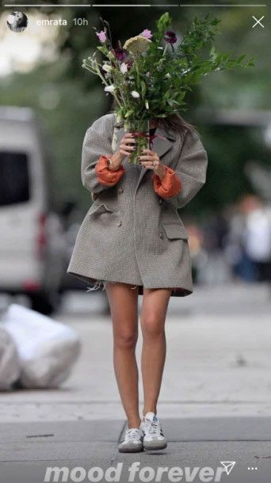
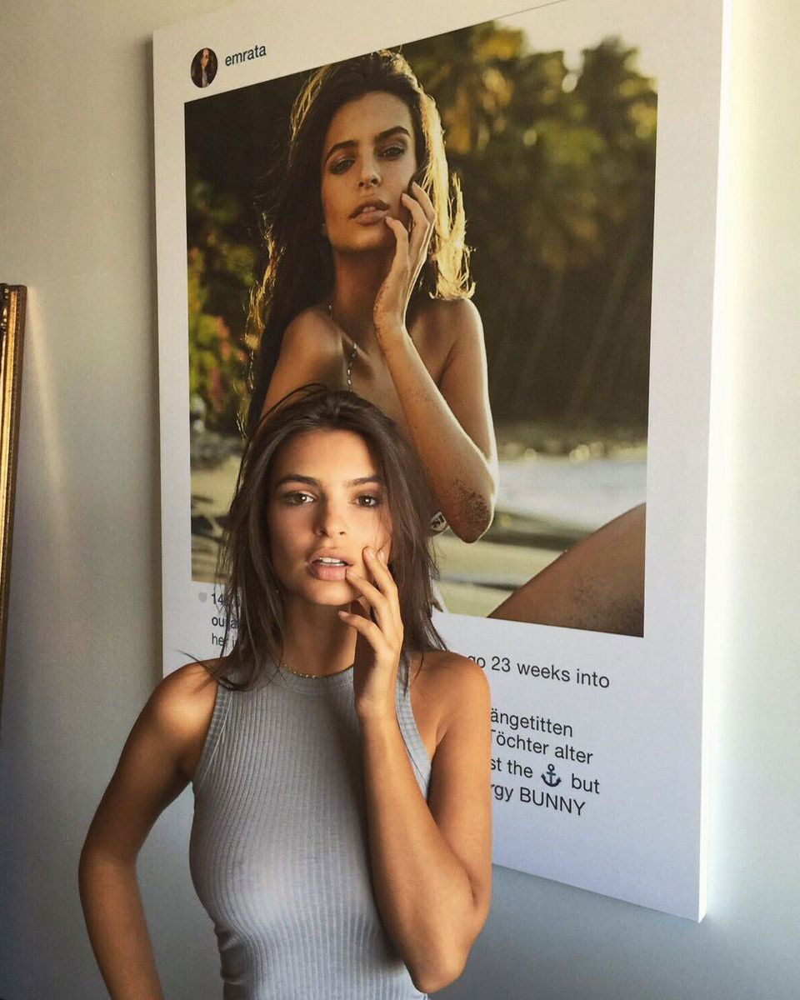
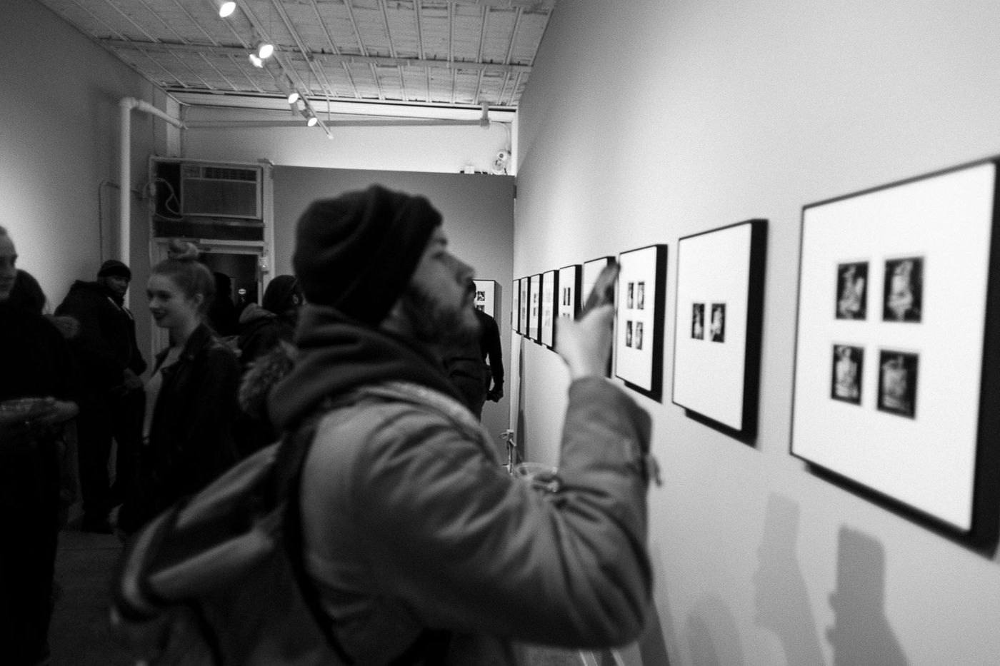

While we were together several years ago, my boyfriend befriended a guy who worked at an important international art gallery. The gallerist said we might want to take a look at its upcoming show of Richard Prince’s “Instagram Paintings.” The “paintings” were actually just images of Instagram posts, on which the artist had commented from his account, printed on oversize canvases. There was one of me in black-and-white: a nude photograph of my body in profile, seated with my head in my hands, my eyes narrowed and beckoning, an image that was taken for the cover of a magazine.
Everyone, especially my boyfriend, made me feel like I should be honored to have been included in the series. Richard Prince is an important artist, and the implication was that I should feel grateful to him for deeming my image worthy of a painting. How validating. And a part of me was honored. I’d studied art at UCLA and could appreciate Prince’s Warholian take on Instagram. Still, I make my living off posing for photographs, and it felt strange that a big-time, fancy artist worth a lot more money than I am should be able to snatch one of my Instagram posts and sell it as his own.
The paintings were going for $80,000 apiece, and my boyfriend wanted to buy mine. At the time, I’d made just enough money to pay for half of a down payment on my first apartment with him. I was flattered by his desire to own the painting, but I didn’t feel the same urge to own the piece as he did. It seemed strange to me that he or I should have to buy back a picture of myself — especially one I had posted on Instagram, which up until then had felt like the only place where I could control how I present myself to the world, a shrine to my autonomy. If I wanted to see that picture every day, I could just look at my own grid.
To my boyfriend’s disappointment, his gallerist friend texted him only a few days later to say that a big-time collector wanted it.

The Instagram post I was sued for sharing in 2019. Photo: Robert O’Neil / Splash News, Photo by Robert O’Neil, the subject of O’Neil v. Ratajkowski et al.
I knew of the gallerist through a bunch of different people and had met him once or twice, so it didn’t take long to find out what actually happened to the piece. The giant image of me was hanging above the couch in his West Village apartment.
“It’s kind of awkward,” a friend of mine said, describing the painting’s placement in the gallerist’s home. “He, like, sits under naked you.”
But it turned out Prince had made another Instagram painting of me, and this one was still available. The piece was a reproduction of a photo from my first appearance in Sports Illustrated. I was paid $150 for the shoot and a couple grand later, when the magazine came out, for the “usage” of my image. I hated most of the photos from that spread because I didn’t look like myself: The makeup was too heavy, there were too many extensions in my hair, and the editors had kept telling me to smile in a fake way. But I did like a few of the images of me in body paint and had posted one of those pictures, which Prince then reused for this “painting.”
Prince’s comment on that post, included among several others at the bottom of the painting, alludes to an imagined day he has spent with me on the beach: “U told me the truth. U lost the [anchor emoji]. No hurt. No upset. All energy bunny now that it’s sunny,” it reads. I liked the comment he left on this one far better than his comment on the black-and-white study, where he asks, “Were you built in a science lab by teenage boys?”
A Smart Investment
When I realized we had the opportunity to procure this one, it suddenly felt important to me that I own at least half of it; we decided to purchase it directly from the artist and split the cost down the middle. I liked the idea of getting into collecting art, and the Prince seemed like a smart investment. But mostly, I couldn’t imagine not having a claim on something that would hang in my home. And I knew my boyfriend felt like this was some kind of conquest; he’d worked hard to get it. I should be appreciative, I thought. Just split it with him. Besides, I was 23; I hadn’t made enough money to comfortably spend $80,000 on art.
When the piece arrived, I was annoyed. I’d seen online that other subjects of the Instagram paintings were being gifted “studies,” the smaller drafts of the final works. My boyfriend asked the studio, and some months later, a 24-inch mounted black-and-white “study” arrived. It was a different shot than the large piece we had purchased, but I still felt victorious.
When our relationship ended, about a year and a half later, I assumed he wouldn’t want the canvas — a giant picture of me, now his ex — so we began to make arrangements to divide our belongings, including the artwork we had bought together. In exchange for two other pieces of art, I received ownership of the Prince.
A few weeks later, I realized — sitting up straight, half-asleep in my bed with my jaw clenched in the middle of the night — that I hadn’t collected the black-and-white study the studio had gifted to me. My ex told me he “hadn’t thought about that” and told me he’d moved the piece into storage. We went back and forth via email until he told me I needed to pay him $10,000 for the study, a price he’d arrived at from his “knowledge of the market.”
“But it was a gift to me!” I wrote.
I reached out to Prince’s studio. Could they offer some clarity or assistance? Help me get him to back off this ridiculous ransom? Through my contacts, I was assured that they would reach out to him to confirm that the study had been a gift from Prince to me and me alone. He didn’t respond well to this assertion.
All these men, some of whom I knew intimately and others I’d never met, were debating who owned an image of me. I was considering my options when it occurred to me that my ex, whom I’d been with for three years, had countless naked pictures of me on his phone.
I thought about something that had happened a couple of years prior, when I was 22. I’d been lying next to a pool under the white Los Angeles sun when a friend sent me a link to a website called 4chan. Private photos of me — along with those of hundreds of other women hacked in an iCloud phishing scam — were expected to leak onto the internet. A post on 4chan had compiled a list of actresses and models whose nudes would be published, and my name was on it. The pool’s surface sparkled in the sunlight, nearly blinding me as I squinted to scroll through the list of ten, 20, 50 women’s names until I landed on mine. There it was, in plain text, the way I’d seen it listed before on class roll calls: so simple, like it meant nothing.
Later that week, the photos were released to the world. Pictures meant only for a person who loved me and with whom I’d felt safe — photos taken out of trust and intimacy — were now being manically shared and discussed on online forums and rated “hot” or “not.” Rebecca Solnit wrote recently about the message that comes with revenge porn: “You thought you were a mind, but you’re a body, you thought you could have a public life, but your private life is here to sabotage you, you thought you had power so let us destroy you.” I’d been destroyed. I’d lost ten pounds in five days and a chunk of hair fell out a week later, leaving a perfectly round circle of white skin on the back of my head.
The next day, I wired my ex the money. I didn’t think I could survive going through what I’d been through again. I exchanged the safety of those hundreds of Emilys for one image — an image that had been taken from my platform and produced as another man’s valuable and important art.

At my home in Los Angeles with the Richard Prince Instagram “painting” in 2016. Photo: Courtesy of Emily Ratajkowski
I hung the giant Instagram painting, the image from the Sports Illustrated shoot, on a prominent wall in my new home in Los Angeles. When people visited, they’d rush toward it and yell, “Oh, you got one of these!”
My guests would cross their arms and study the painting, read Prince’s comment, and smile. They’d often turn back to me to ask if I knew what the comment above Prince’s, from some unknown user, said. “Is it German?” they’d ask, squinting.
Eventually, after enough people asked, I decided to translate the comment myself.
“It’s about how saggy my tits look,” I told my husband, whom I now share a home with. He came over and put his arms around my back, whispering, “I think you’re perfect.” I felt myself stiffen. Even the love and appreciation of a man I trusted, I had learned, could mutate into possessiveness. I felt protective of my image. Of her. Of me.
The next time someone asked about the German comment, I lied and said I didn’t know.
In 2012, my agent told me I should buy a bus ticket from Penn Station to the Catskills, where a photographer named Jonathan Leder would pick me up and reimburse me for my fare. We’d shoot in Woodstock, for some arty magazine I’d never heard of called Darius, and I’d spend the night at his place, she said. This was something the industry calls an unpaid editorial, meaning it would be printed in the magazine and the “exposure” would be my reward.
I had been working with my agent full time for about two years. She had known me since I was 14, when I landed my first modeling and acting jobs, but she began to take my career more seriously when I turned 20. I began to take my career more seriously, too: I dropped out of UCLA to pursue modeling and was working quite regularly. I opened an IRA and paid off my first and only year at college with the money I’d made. I wasn’t doing anything fancy or important, mostly e-commerce jobs for places like Forever 21 and Nordstrom, but the money was better than what any of my friends were making as waitresses or in retail. I felt free: free of the asshole bosses my friends had to deal with, free of student-loan debt, and free to travel and eat out more and do whatever the hell I pleased. It seemed crazy to me that I had ever valued school over the financial security that modeling was beginning to provide.
When I looked up Jonathan’s work online, I saw a few fashion editorials he’d shot on film. A little boring, I remember thinking. Hipster-y. His Instagram was mostly pictures of his home and a few strange, retro images of a very young-looking Russian woman with obvious breast implants. Kind of weird, I thought, but I had seen weirder. Maybe this is just the stuff he puts on his Instagram? His work on Google looked celestial and pretty. Legit. I didn’t bother to investigate further. Besides, my agent was in full control of my career: I did what she told me to do, and in return, she was supposed to expand my portfolio so I could book more paid jobs and establish myself in the industry. As promised, Jonathan picked me up from the bus stop in Woodstock. He had a small frame and was plainly dressed in jeans and a T-shirt. He seemed distinctly disinterested in me and didn’t meet my eyes as he drove us in a vintage car over streets lined with tall grass. He came off as a nervous, neurotic artist type. He was very different from the other “fashion” photographers I’d met up to that point, men who tended to be L.A. douchebags with strategically placed highlights in their hair who smelled like sweet cologne.
I was wearing a tank top that I’d tucked into the front of high-waisted shorts, and as we drove, I watched the soft blonde hairs on my thighs glisten in the sunlight. Jonathan never looked at me directly, but I remember feeling watched, aware of our proximity and my body and how I might appear from his driver’s seat. The more disinterested he seemed, the more I wanted to prove myself worthy of his attention. I knew that impressing these photographers was an important part of building a good reputation. Does he think I’m smart? Especially pretty? I thought about all the other young models who must have come to this bus station in the Catskills and sat in this car.
When we arrived at Jonathan’s home, two children were sitting at the kitchen table. I stood awkwardly at the door in my short shorts and felt embarrassingly young — unwomanly even, like a kid myself. I noted the time from a clock on the wall: How are we going to shoot today if it’ll be dark in just an hour and a half? Maybe we’ll shoot very early tomorrow, I figured. I brought my hands up to the straps of my backpack and shifted my weight from side to side, waiting for instruction. I felt relief wash over me when a makeup artist arrived at the house and proceeded to set up on the kitchen table next to Jonathan’s kids. She was older than me and quiet. I felt more comfortable upon her arrival; the pressure was off me to know how to be and how to compensate for Jonathan’s strangeness now that another adult was there and a woman.
The makeup artist finished setting up and began working on my face while Jonathan cooked dinner. He offered me a glass of red wine, which, in my nervousness and desire to seem older and wiser than I was, I accepted and drank quickly. I took deep sips as the makeup artist painted a thick, black, wet liner onto the tops of my eyelids. I opened my iPhone’s selfie camera in my lap to check her work. She was making me look pretty, transforming me to fit Jonathan’s aesthetic vision. When he laid out old-fashioned lingerie on a kitchen chair, I began to grasp what type of girl he wanted me to be. My agent hadn’t mentioned that the shoot would be lingerie, but I wasn’t concerned; I’d done countless lingerie shoots before. I could imagine her writing to me the next day, “Jonathan loved you. Can’t wait to see pics! Xx,” as she had on other occasions.
Jonathan’s kids were picked up by someone who did not come inside the house, while the makeup artist finished preparing my face. When he was done cooking, Jonathan, the makeup artist, and I all sat around the kitchen table eating pasta, as if we were a small family. He talked about his “crazy” ex-wife and his affair with a “crazy” actress, now 21 (a year older than me, I noted). He told me about his marriage’s undoing; that the actress, whom Jonathan had cast for a short film he’d been making at the time, came to live with them. He showed me naked pictures, Polaroids, he’d taken during their affair. She seemed so vulnerable in Jonathan’s photos, even though I could tell she was trying to look strong and grown up from the way she held her face square to the camera, chin up, her hair falling perfectly over one eye.
“No one has shot her better,” he said over his shoulder, as I continued to riffle through the Polaroids.
Something switched inside me then. As I looked at the images, I grew competitive. This guy shoots all these women, but I’m going to show him that I’m the sexiest and smartest of them all. That I am special. I chewed on my lower lip as I handed the neat stack of Polaroids back to Jonathan.
I wondered where he normally kept these Polaroids. Were they all meticulously labeled in a giant filing cabinet somewhere in his attic, the names of young women written in ink on their assigned drawers? The image of a morgue came to mind.

The New York Post headline for Jonathan Leder’s gallery show in 2017 read: “Emily Ratajkowski doesn’t want you to see this art show.” People went anyway. Photo: JAB
It was dark, and my hair was still in rollers as I finished my third glass of wine, my mouth stained purple. I was used to unusual setups on shoots, but I’d never been in a situation like this before. I made sure not to eat too much, while Jonathan silently refilled my glass and I kept drinking. In the industry, I’d been taught that it was important to earn a reputation as hardworking and easygoing. “You never know who they’ll be shooting with next!” my agent would remind me. We finished our meal relatively quickly, and I helped bring dishes to the sink as Jonathan washed them. “Thank you, that was so good,” I said politely. I turned and leaned against the counter, opening my phone. Jonathan sneered. “You girls and your Instagram. You’re obsessed! I don’t get it,” he said, shaking his head and drying a plate with a dish towel.
The makeup artist painted on a bright-red lipstick, and I changed into a high-waisted pink lingerie set. We headed to the upstairs bedroom to begin shooting. I sat up on an antique brass bed frame, my knees pressing into the faded floral-print sheets. As Jonathan shot the first Polaroid, I explained that modeling was just about making money for me. “When the economy crashed and I started to get more opportunities to work, it just made sense that I’d pursue this while I could,’’ I said. I was used to defining myself with this explanation, to men especially. “I’m not dumb; I know modeling has its expiration date. I just want to save a lot of money and then go back to school or start making art or whatever.”
Jonathan frowned as he inspected the Polaroid. “You girls always end up spending too much money on shoes and bags,” he said. “It’s not a way to save real money.”
“I don’t buy bags,” I said weakly, but I began to doubt myself. I was dumbfounded by his easy dismissal of my life’s plan, and began to panic. What if he was right? What if at the end of this I really would have nothing?
He paused then and turned, silently walking back downstairs to the kitchen. I followed behind, shoeless and in my lingerie set. He spread the Polaroids out on the table and scratched his head, inspecting them. I peered at the pictures from over his shoulder. “These are just kind of … boring and stiff,” he said with a sigh. “Maybe take off the red lipstick, fuck up your hair.” He waved his hand at the makeup artist and went to the counter to open another bottle of wine, pouring fresh glasses for himself and me. The makeup artist rubbed her nails roughly into my scalp, loosening my curls. I could feel the acidic burn of alcohol in my chest as we proceeded back upstairs.
He was turned away from me when he said, “Let’s try naked now.’’
I’d been shot nude a handful of times before, always by men. I’d been told by plenty of photographers and agents that my body was one of the things that made me stand out among my peers. My body felt like a superpower. I was confident naked — unafraid and proud. Still, though, the second I dropped my clothes, a part of me disassociated. I began to float outside of myself, watching as I climbed back onto the bed. I arched my back and pursed my lips, fixating on the idea of how I might look through his camera lens. Its flash was so bright and I’d had so much wine that giant black spots were expanding and floating in front of my eyes.
“iCarly,” Jonathan said, smirking as he shot. Only his mouth was visible, the rest of his face eclipsed by his camera. That was the name of the Nickelodeon show I’d been on for two episodes while in high school.
I put my lingerie back on, and we made our way back downstairs, Jonathan in front of me, gripping the Polaroids in his fists before dropping them on the kitchen table. My face was hot from the wine, and my cheeks glowed and throbbed. He was excited as he scrutinized the pictures, holding one up close to his face and then letting it fall again.
“You know, I thought you would be bigger. A big girl,” he said, his brow furrowing as he picked up another Polaroid for inspection. He told me that when he Googled me prior to our meeting, he’d seen a particular shoot that left him with this impression.
“You know, big-boned. Fat.” He half-smiled.
“Yeah, no,” I said, laughing. “I’m like really, really tiny.”
I knew what pictures he was referencing, from early in my career. I hated them, and I hated the way I’d felt while shooting them. I hated the way the stylist had made comments about my body, about how I could never be a fashion model. I also knew, even though I never would have admitted it, that I’d been less concerned with my weight at the time of that shoot. Freer. I enjoyed food more and didn’t think so much about the shape of my ass. I didn’t have to; I wasn’t relying on modeling as much then.
I sipped my wine. “What should we shoot next?”
Time warped in the glow of the warm yellow lamps of Jonathan’s living room, the vintage lingerie draped over the musty, floral-printed armchairs. As the night went on, I became sweaty and exhausted and bleary-eyed. But I was still determined. I liked to check out the first few Polaroids Jonathan took with each new “look” and adjust my pose and body accordingly before we continued. I could feel him bristle as I exclaimed, “Oh, I like that one!”
“This one, though,” he said, holding the stack of Polaroids to his chest and flicking one around so I could catch a quick glance of it. “This one is so good because of your nipples. Your nipples change so much from hard to soft. But I like them when they’re gigantic,” he said, opening his phone to show me a vintage pinup of a woman with oversize nipples. “I love when they’re giant,” he told me. “Giant and exaggerated.” He looked back to his phone, and the corners of his mouth turned up slightly. I said nothing and nodded, confused but somehow feeling that he meant to insult me. I felt my stomach turn.
I had no sense of what time it was when the makeup artist announced she was going to bed. I can’t remember if we had stopped shooting and were just looking at the pictures together or what. I’m sure she was sick of my posturing with Jonathan. I remember the way she sighed as she turned away from me, vanishing. I stiffened as her presence dissolved from the living room. I was upset with her for leaving me, but I didn’t want to admit to myself that her presence had made a difference. I can handle him alone, I thought. She was a buzzkill anyway. I sat up, erect. I started talking faster and louder. I was pumped full of so much sugary wine that I felt wide awake, albeit very, very drunk.
The next thing I remember is being in the dark.
The yellow lights were switched off, and I was cold, shivering, and huddled under a blanket. Jonathan and I were on his couch, and the rough texture of his jeans rubbed against my bare legs. He was asking me about my boyfriends. My mouth was chalky, but I remember I was still talking a lot — about my dating history, which guys I really loved, which ones were whatever. As I spoke, I absentmindedly rubbed my feet against one another and against his for warmth. He told me he liked “that foot thing you’re doing,” and I remember this moment more clearly than anything else. I hate that Jonathan commented on something I’ve done throughout my life to comfort myself. I hate that sometimes, even now, when I rub my feet together because I’m cold or afraid or exhausted, I think of Jonathan.
Most of what came next was a blur except for the feeling. I don’t remember kissing, but I do remember his fingers suddenly being inside of me. Harder and harder and pushing and pushing like no one had touched me before or has touched me since. I could feel the shape of myself and my ridges, and it really, really hurt. I brought my hand instinctively to his wrist and pulled his fingers out of me with force. I didn’t say a word. He stood up abruptly and scurried silently into the darkness up the stairs.
I touched my forehead with the coolness of my palm and breathed in through my nose. I felt the bristled texture of the old couch against my back. My body was sore and fragile, and I kept stroking parts of myself with the back of my hand — my arms, my stomach, my hips — maybe to calm them or maybe to make sure they were still there, attached to the rest of me. An intense headache began to beat into my temples, and my mouth was so dry I could barely close it.
I stood up carefully, pressing my bare feet against the floorboards. I climbed up the wooden stairs and into the room where we’d shot at the beginning of the night, then lay down on the thin, flowery sheets. I shivered uncontrollably. I was both confused as to why Jonathan had left without a word and terrified that he would come back. I listened for a sign of him as I watched the blue light of dawn peek in through the window. I thought about Jonathan’s daughter. Does she normally sleep in this bed?, I wondered.
Later in the morning, I woke with a vicious hangover. I dressed quickly in the clothes I’d been wearing the day before and noticed that my hands were shaking. Downstairs, Jonathan was making coffee, and the makeup artist was already up and dressed and sitting hunched over a mug. Jonathan didn’t react much to my arrival. “You want coffee?” he asked. My temples pounded. “Sure,” I half-heartedly chimed, opening Instagram. Jonathan had put up one of the Polaroids from the night before.
He had captioned it simply “iCarly.”
It was only as I sat on the bus headed back to the city that I realized Jonathan had never paid me back for the fare.